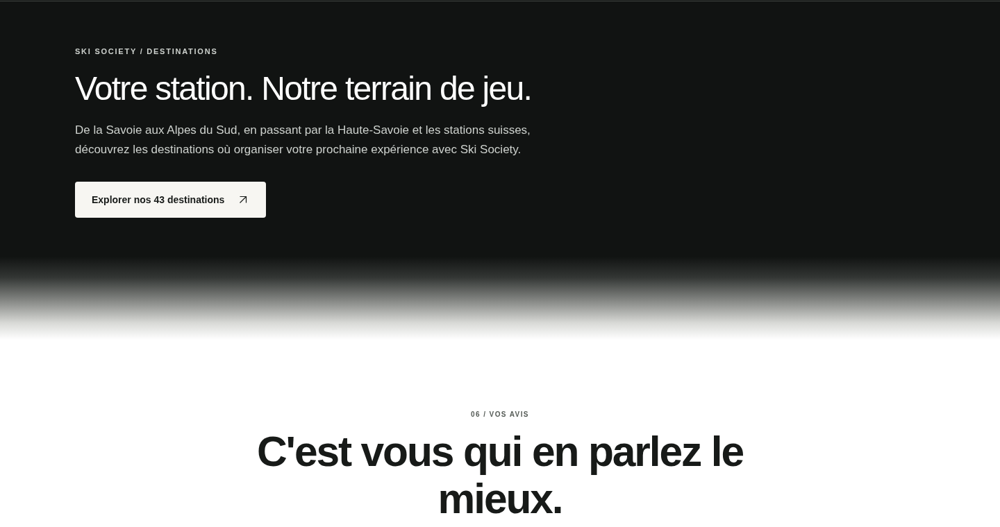
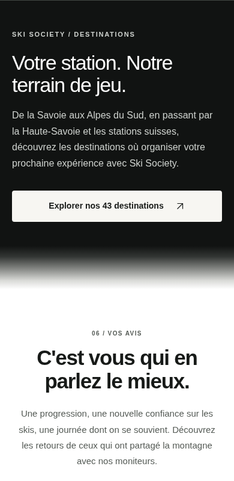

Destinations → Avis : dégradé de couleur seul
Aucune photographie, aucun texte, aucun pseudo-élément dans la transition. Hauteur 120 px sur desktop et 72 px sur mobile. Textes et liens conservés.
Desktop — 1440 px

Mobile — 390 px

Contrôles complémentaires


Rapport et validation visuelle · Mesures et résultats des tests